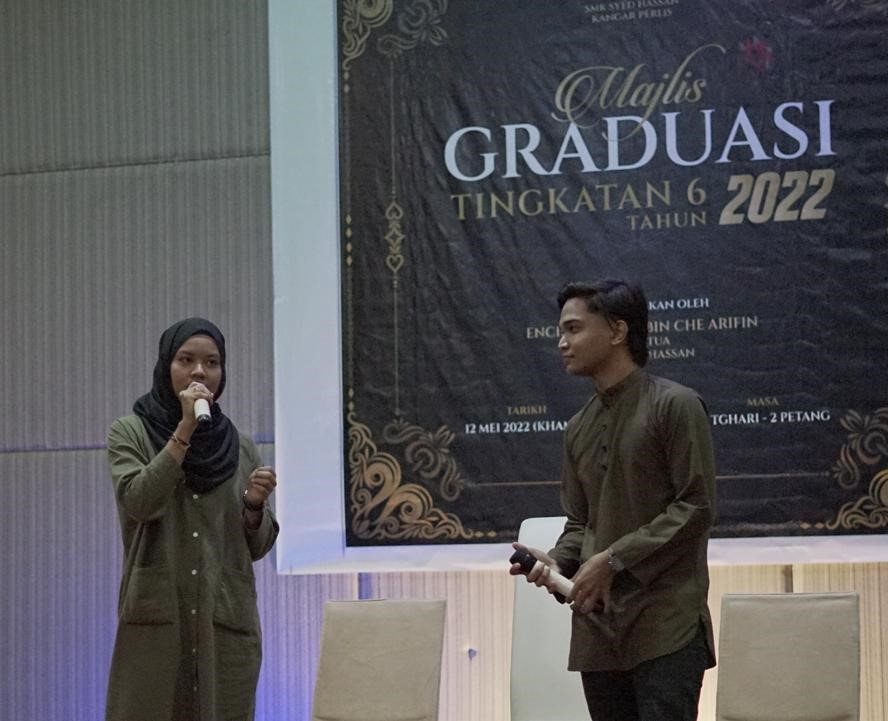
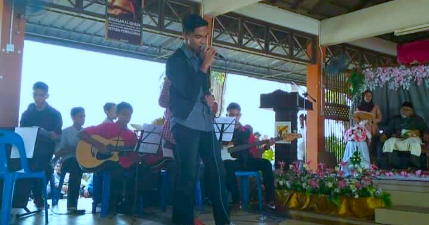
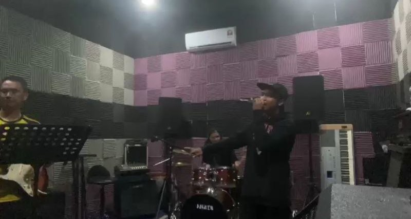
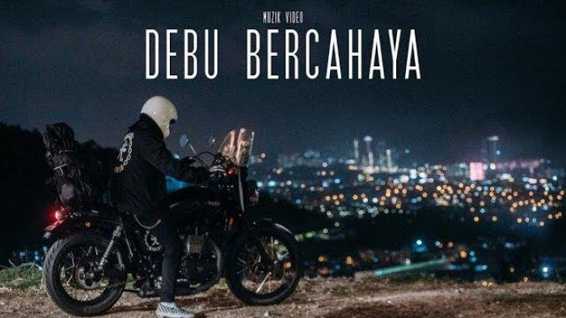
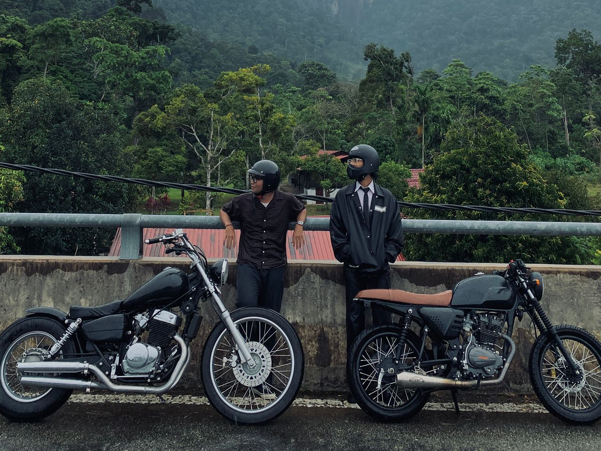
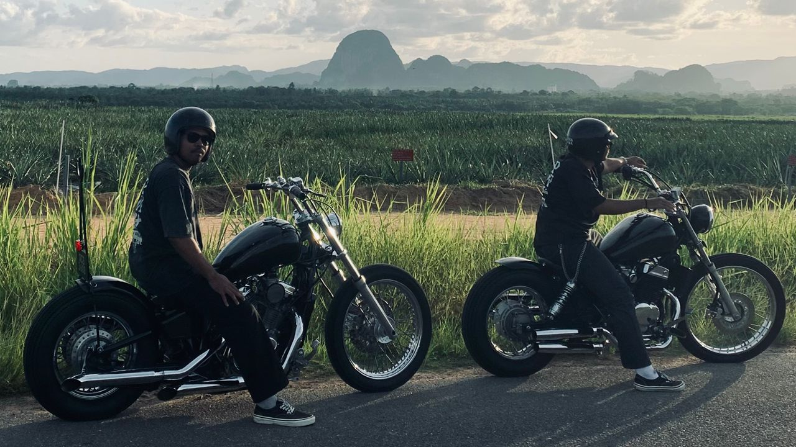

Home
About
Education
Skills & Extra-Curricular
Job Experience
Hobby
Contact
My Hobby
I have been interested in music since I was a child, so singing has always been my hobby and passion.
I also enjoy riding motorcycles with my friends, which brings fun and a sense of adventure.
Singing Highlights



Favourite Song

Riding Highlights
Your browser does not support the video tag.


TOP
Copyright © 2025 Izzairi Roslan